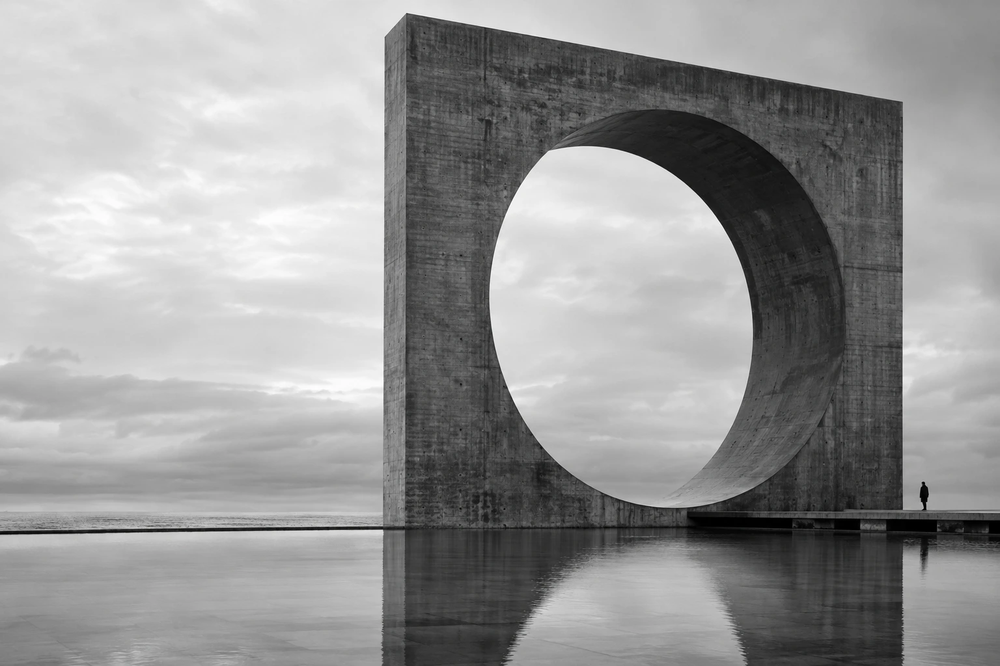

MONOLITH

Make space
for the essential.
Discover the work ↗Good products have
a strong foundation.
And a human point of view.
I bring twenty years of design and engineering to the space between an ambitious idea and a working product. Less noise. More purpose. Enough structure to make the next decision clear.
Explore the experience ↗Selected constructions.
INDEPENDENT PRODUCTSA little structure.
A lot of possibility.
One form, seen differently. Adjust the spacing and perspective to explore how a system becomes something more than its parts.
Use the controls to change the form.
Built over time.
Made to matter.
Kohl's2021-present
Cart, checkout, wallet, account, and self-checkout. Designing across the commerce journey while advancing AI practice.
Walmart Labs2017-2021
Led mobile, voice, and personalization design through a major retail transformation.
Google2013-2017
Built high-fidelity prototypes for Cloud AI, Assistant, and Android to help teams settle product decisions quickly.
Yahoo!2005-2013
Directed global prototyping teams, personalization work, design process, and senior talent development.
Endemol1998-2005
Led UX and engineering for multilingual platforms across an international entertainment portfolio.